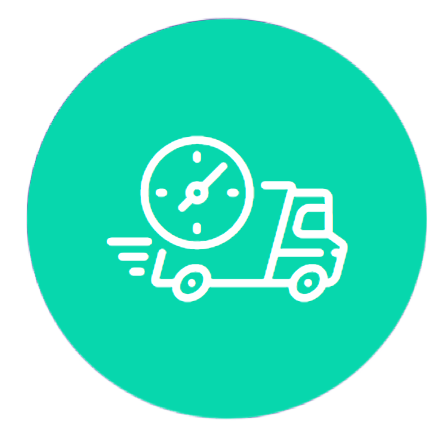

Іноземна економічна діяльність має власні нюанси управління документами, тому звернення до компанії, що надає професійні послуги митного брокера для юридичних організацій, може значно заощадити час та фінанси, а також уникати помилок на будь -якому етапі оформлення.
Foreign economic activity has its own nuances of document flow. Contacting a company that provides professional services of a customs broker for legal entities can save time and finances, as well as avoid mistakes at any stage of registration.
AS-Trans, місто Києв, пропонує весь комплекс послуг митного брокера – від консультацій до повної підтримки вантажу. Звертаючись до нас, ви, безумовно, оціните високий рівень професіоналізму працівників, індивідуальний підхід до кожного клієнта, чітке дотримання узгоджених умов та здатність знайти найкращий вихід із будь -якої, навіть найскладнішої ситуації.
AS-Trans company, Kyiv, offers a wide range of customs broker services – from consultation to full cargo escort. Turning to us, you will appreciate the high level of professionalism of our employees, personal approach to each client, strict adherence to the agreed deadlines and the ability to find the best way out of even the most difficult situation.
Список послуг митного брокера AS-Trans, Україна, є досить широким. Отже, наші експерти можуть повністю представляти інтереси клієнта на митниці у відповідності законодавчим нормам – це допоможе врахувати всі нюанси, пов’язані з виконанням дозволів, сертифікатів та іншої юридичної підготовки товарів для легкого та безперешкодного проходження митниці .
The list of services provided by the customs broker AS-Trans, Ukraine, is wide. Our specialists can fully represent the interests of the client at customs in compliance with the law. This will help take into account all the nuances related with the execution of permits, certificates and other legal preparation of goods for easy and smooth customs clearance.
Обов’язки митного брокера AS-Trans, залежно від узгоджених умов співпраці, можуть включати:
The duties of the AS-Trans customs broker depend on the agreed terms of cooperation. They may include:
Крім того, послуги митного брокера можуть включати контроль завантаження та вивантаження товарів, складаючи оптимальний маршрут доставки. Цей спеціаліст також може домовлятись з різними органами, послугами, представниками державних та комерційних структур.
Таким чином, брокер займається не лише представленням інтересів клієнта у здійсненні іноземної економічної діяльності, а й, якщо необхідно, їх захисту.
Усі права та зобов’язання сторін, а також перелік послуг, що надаються митним брокером компанії AS-Trans, Україна реєструється в угоді, яка обов’язково підписується на початку співпраці.
Ціни митного оформлення вантажів відрізнятимуться і розраховуються індивідуально залежно від потреб клієнта. Як вже раніше згадувалося, компанія AS-TRANS завжди дбатиме як про свою репутацію, так і про потреби клієнта, тому ціни наших послуг дуже лояльні і ми завжди намагаємося позбавити наших клієнтів додаткових витрат.
Prices for customs clearance of different goods can vary and are calculated individually depending on the needs of the client. As mentioned earlier, AS-TRANS always takes care of both its reputation and the needs of the client, therefore the prices of our services are very loyal and we always try to save our clients from additional costs.
Митне оформлення вантажів в Україні Ви можете замовити зателефонувавши до нашої компанії за телефоном, який Ви бачите на сайті. Ми завжди відкриті до діалогу та готові надати індивідуальні знижки у разі оформлення довгострокового контракту.
You can order customs clearance of goods in Ukraine by calling our company at the phone number listed on the website. We are always ready to provide individual discounts in case of a long-term contract.